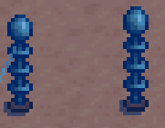

Datei:Rod normal vs charged.gif
Zur Navigation springen
Zur Suche springen

Es ist keine höhere Auflösung vorhanden.
Rod_normal_vs_charged.gif (181 × 141 Pixel, Dateigröße: 41 KB, MIME-Typ: image/gif, Endlosschleife, 31 Bilder, 2,4 s)
Dateiversionen
Klicke auf einen Zeitpunkt, um diese Version zu laden.
| Version vom | Vorschaubild | Maße | Benutzer | Kommentar | |
|---|---|---|---|---|---|
| aktuell | 05:00, 8. Mär. 2016 |  | 181 × 141 (41 KB) | Frenchiveruti | Rod that isn't charged vs a rod that it's charged |
Dateiverwendung
Die folgende Seite verwendet diese Datei: